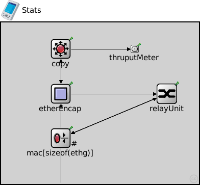

This documentation is released under the Creative Commons license
This documentation is released under the Creative Commons licenseThis module is very important. Inside of it, we will take the measurements and record the results. There will be one in emitter and another in receiver mode.
| Name | Type | Description |
|---|---|---|
| Receiver | compound module |
This module receives the information and make the right calculations to obtain the end-to-end delay and jitter. |
| Trasmitter | compound module |
This module is the generator of traffic. It takes the time when the packet was created and the moment when it arrives to the module. This data is attached in the packet. |
| Name | Type | Default value | Description |
|---|---|---|---|
| relayUnitType | string | "MACRelayUnitNP" |
type of the MACRelayUnit; currently possible values are MACRelayUnitNP and MACRelayUnitPP |
| Name | Value | Description |
|---|---|---|
| node | ||
| labels | node | |
| display | i=device/pocketpc;bgb=388,317 |
| Name | Direction | Size | Description |
|---|---|---|---|
| ethg [ ] | inout |
| Name | Type | Default value | Description |
|---|---|---|---|
| relayUnit.addressTableFile | string |
set to empty string if not used |
|
| relayUnit.addressTableSize | int |
max size of address table |
|
| relayUnit.agingTime | double |
max idle time for address table entries (when it expires, entry is removed from the table) |
|
| mac.address | string | "auto" |
MAC address as hex string (12 hex digits), or "auto". "auto" values will be replaced by a generated MAC address in init stage 0. |
| mac.txrate | double | 100Mbps |
maximum data rate supported by this station (bit/s); actually chosen speed may be lower due to auto- configuration. 0 means fully auto-configured. |
| mac.duplexEnabled | bool | true |
whether duplex mode can be enabled or not; whether MAC will actually use duplex mode depends on the result of the auto-configuration process (duplex is only possible with DTE-to-DTE connection). |
| mac.txQueueLimit | int | 1000 |
maximum number of frames queued up for transmission; additional frames are dropped. Only used if queueModule=="" |
| mac.mtu | int | 1500 | |
| thruputMeter.startTime | double | 0s | |
| thruputMeter.batchSize | int | 50 | |
| thruputMeter.maxInterval | double | 1s | |
| thruputMeter.emisor | int | 1 | |
| thruputMeter.rcv_win | double | 65535 | |
| thruputMeter.tcp | int | 0 | |
| copy.mode | int | 1 |
1 for emitter mode, 2 to receiver mode |
| copy.pktLost | double | 0 |
Number of Packets lost |
// // This module is very important. Inside of it, we will take the measurements // and record the results. There will be one in emitter and another in receiver // mode. // module Stats { parameters: @node(); @labels(node,ethernet-node); @display("i=device/pocketpc;bgb=388,317"); string relayUnitType = default("MACRelayUnitNP"); // type of the MACRelayUnit; currently possible // values are MACRelayUnitNP and MACRelayUnitPP gates: inout ethg[] @labels(EtherFrame-conn); submodules: relayUnit: <relayUnitType> like MACRelayUnit { parameters: @display("p=325,140"); gates: lowerLayerIn[sizeof(ethg)]; lowerLayerOut[sizeof(ethg)]; } mac[sizeof(ethg)]: EtherMAC { parameters: promiscuous = true; queueModule = ""; @display("p=117,227,row;q=queue"); } etherEncap: EtherEncap { @display("p=117,140"); } thruputMeter: ThM { @display("p=262,52"); } copy: Copy { @display("p=117,52"); } connections: mac[0].upperLayerIn <-- relayUnit.lowerLayerOut[0]; mac[1].upperLayerIn <-- relayUnit.lowerLayerOut[1]; mac[1].upperLayerOut --> relayUnit.lowerLayerIn[1]; mac[0].phys <--> ethg[0]; mac[1].phys <--> ethg[1]; etherEncap.lowerLayerOut --> relayUnit.lowerLayerIn[0]; etherEncap.lowerLayerIn <-- mac[0].upperLayerOut; copy.inEncapGate <-- etherEncap.upperLayerOut; etherEncap.upperLayerIn <-- copy.outEncapGate; copy.thGate --> thruputMeter.in; }
This documentation is released under the Creative Commons license